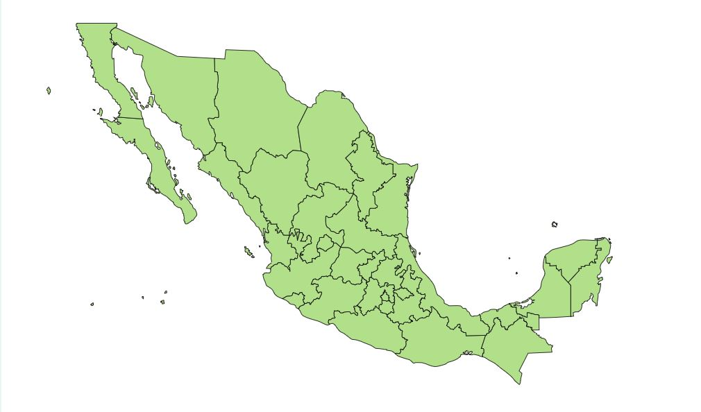

Descripcion:
Esta planta se caracteriza por tener tallos florales capaces de alcanzar hasta 50 centímetros de altura. Sus hojas tienen la forma del extremo de una lanza, son largas, y ligeramente dentadas en el borde. Éstas parten de un mismo punto de origen, ubicado en el centro de la planta y al ras del suelo. Este punto se denomina roseta basal, y es típica de las plantas perennes. Florece en el lapso comprendido entre la primavera y el verano. Sus flores son pequeñas, conforman una espiga con pétalos marrones un tanto amarillentos, y las anteras son moradas. Es ampliamente reconocida por sus propiedades para la salud, ya que su uso ayuda en la limpieza del torrente sanguíneo y la expulsión de los desechos del organismo de forma natural.
La oreja de burro contiene un látex blanco, muy venenoso, que rebosa cuando se corta una rama o una hoja. Este látex, de color blanquecino, es compuesto de agua, gránulos de almidón, alcaloides, enzimas, sustancias proteicas, resinas y gomas. Se le denomina popularmente Oreja de Burro, dada la similitud de la forma de sus hojas con las orejas del referido animal.
Usos Medicinales:
Dependiendo de la forma de ingesta o aplicación de esta planta, es empleada
en el tratamiento de diversas afecciones de la salud.
Contra-indicaciones:
- No deben consumirlo mujeres embarazadas ni en periodo de lactancia.
- Si consumes medicamentos consulta a tu médico para descartar cualquier interacción.
